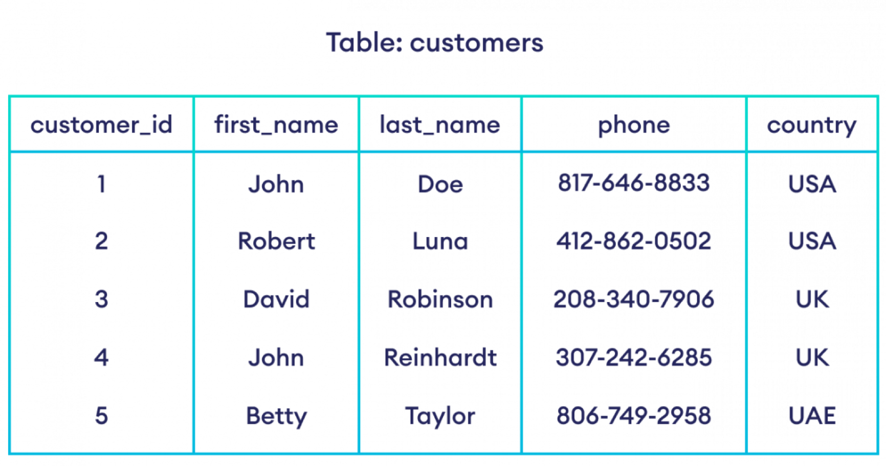

Introduction to Data Bases
IN2004B: Generation of Value with Data Analytics
Agenda
- Dashboards para Visualizar Indicadores
- Bases de Datos para Almacenar Indicadores
Dashboards para Visualizar Indicadores
El tablero de control integral
Una vez que se definene los indicadores usando el Balance Scorecard y el formato de documentación, se procede a diseñar los tableros de control:
- pantallas,
- estilos de gráficos y tablas,
- niveles de agregación,
- reportes predeterminados,
- requerimientos de drill-down.
Esto es tanto para el nivel general de la organización, como para los BSC funcionales.
Despliegue del tablero de indicadores
Para la implementación de los tableros de indicadores se pueden seguir diversas estrategias, por ejemplo:
Desarrollo en una plataforma especializada para sistemas de indicadores (https://www.predictiveanalyticstoday.com/open-source-balanced-scorecard-software/)
Desarrollo con herramientas genéricas OLAP On-line Analytical Processing (https://www.softwaretestinghelp.com/best-olap-tools/)
Implementaciones aisladas de corto alcance en hoja de cálculo.
Ejemplo de tablero de indicadores de Tableu

Otro Ejemplo
Bases de Datos para Almacenar Indicadores
Contexto
Aunque los datos para el cálculo de algunos indicadores tienen su origen fuera de la organización, la gran mayoría de los datos provienen de las bases de datos internas del negocio.
Existe mucha diversidad de empresas, unas que tienen aplicaciones aisladas con bases de datos dispersas y con archivos en hojas de cálculo, hasta empresas muy organizadas con un sistema de bases centralizado en un servidor de datos y aplicaciones vinculadas.
Para obtener los datos necesarios para el cálculo de indicadores, muchas veces será necesario integrar datos de diversas fuentes en la empresa. Para esto, se usan herramientas de ETL (extract-transform-load) y data warehousing.
¿Qué es una Base de Datos?
Básicamente, una tabla de datos donde los renglones representan un conjunto de ocurrencias de una entidad (clientes, productos, pacientes, pedidos) y las columnas representan atributos o características que describen a la entidad (cliente: ID + nombre + domicilio + e-mail + saldo ) En el ámbito de TI el concepto de “base de datos” no se refiere a una tabla, sino a un conjunto de tablas relacionadas.
Terminología de BD
Las tablas contienen datos que se refieren a:
- alguna entidad acerca de la cual la organización necesita mantener información
- relaciones entre entidades.
A los renglones de la tabla se les denomina registros.
A las columnas de la tabla se les denomina campos.
Los registros son ocurrencias diferentes de la entidad correspondiente.
Los campos son atributos que describen la entidad.
Cada registro tiene uno o varios campos que identifican de manera única cada registro, esos campos se denominan “llave”.

Bases de Datos Relacionales
Actualmente el modelo de bases más utilizado en el mundo es el de bases de datos relacionales, ver por ejemplo:
https://www.dataversity.net/database-management-trends-in-2020/
Ante el surgimiento de aplicaciones de big data hace que estas bases de datos sean la principal fuente de datos para indicadores en las empresas.
Ejemplo de Base de Datos Relacional
Ejemplo
La base de datos tiene 4 tablas: Pacientes, Medicinas, Recetas y Detalle de las recetas.
La tabla que contiene datos de la entidad “paciente” tiene los siguientes campos: identificador único, nombre, domicilio, fecha de nacimiento, teléfono, y foto.
- La tabla de recetas contiene los datos generales de cada receta expedida: número de receta (es la llave), fecha, hora de consulta, un indicador de si contiene medicamentos controlados o no, y el identificador del paciente, este campo permite relacionar los datos de la receta con los datos del paciente.
- La tabla de medicinas tiene los campos: identificador de la medicina, descripción genérica, agente activo, presentación más común, y contra-indicaciones.
- La tabla de detalle de la receta contiene los renglones de cada receta. Como hay recetas que pueden tener un solo medicamento, puede haber algunas con 2, 3 o más medicamentos, en el modelo relacional se guardan los renglones de todas las recetas en una sola tabla, todos los renglones de una receta tienen el mismo “número de receta” pero diferente “id del medicamento”…
- En la tabla Detalle de Receta puede haber múltiples registros con el mismo Número de receta, porque la receta puede amparar varios medicamentos. También puede haber múltiples registros con el mismo ID de medicamento, porque un medicamento puede aparecer en muchas recetas.
- En este caso, para identificar de manera única un renglón de una receta en particular se requieren los dos identificadores, el de la receta y el del medicamento, esto constituye una llave compuesta.
Consultas (queries) a la BD
Una vez que se tiene la base de datos, es posible contestar preguntas como:
¿En cuáles colonias viven los pacientes a quienes se les ha recetado turbocicloxina?
¿A cuántos pacientes se les ha recetado turbocicloxina en el último mes?
¿Cuáles agentes activos se les han administrado a los pacientes que viven en Prados #520 en el último año?
SQL
Las herramientas y plataformas de Business Intelligence con las que contamos actualmente, nos permiten hacer fácilmente consultas como las del ejemplo anterior, simplemente “arrastrando” campos y aplicando filtros en un lienzo de diseño.
Internamente las herramientas procesan las consultas mediante un lenguaje de manejo de bases de datos que se llama SQL Structured Query Language.
Para hacer consultas más complejas puede ser necesario que se haga la consulta escribiendo directamente el código de SQL.
En este módulo no estudiaremos SQL.